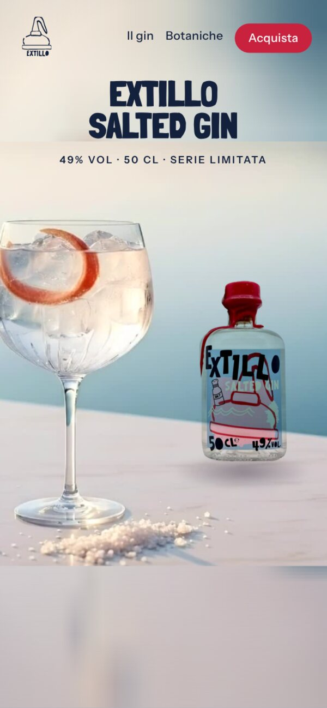

Pubblicato2026
Extillo Gin
Sito scroll-film per un gin artigianale italiano
Un’unica inquadratura continua, guidata dal tuo scroll: dal lago d’Iseo alle saline della Puglia fino al bicchiere, per finire sulla bottiglia vera e sul pulsante d’acquisto.
Cosa ci è voluto
- Direzione artistica
- Da immagine a video
- Motori di scroll
- Claude Code
- Concept
- Tre proposte, messe alla prova prima di sceglierne una. Palette e tono presi dall’etichetta della bottiglia.
- Immagini
- Fotogrammi chiave generati in sequenza, ognuno dal precedente, perché luce e colore restino coerenti.
- Video
- Sei clip da immagine a video concatenate, 25 secondi in 1080p. Ogni giunzione misurata, non solo guardata.
- Sito
- 601 fotogrammi su canvas, testi a tempo, sezione d’acquisto e versione mobile, a 60 fps.
Come l’ho realizzato
Il brief
Extillo è un gin sapido, distillato in un alambicco da 45 litri con botaniche del lago d’Iseo e sale delle saline pugliesi. Il sito doveva far sentire quel viaggio e portare all’acquisto.
L’idea: un’unica inquadratura che parte dal lago, attraversa gli agrumi, entra in un fiore d’arancio, lo trasforma in cristalli di sale e arriva al bicchiere. Alla fine entra in scena la bottiglia vera.
Il processo
Concept e direzione
Tre proposte, messe alla prova prima di sceglierne una. Palette, font e tono presi dall’etichetta della bottiglia.
Fotogrammi chiave
Immagini generate in sequenza, ognuna partendo dalla precedente, per mantenere coerenti luce e colore.
Video
Sei clip da immagine a video concatenate: ognuna parte dall’ultimo fotogramma reale della precedente. Ogni giunzione misurata, non solo guardata.
Sito
Pagina scroll-film su canvas con 601 fotogrammi, testi che entrano a tempo, una sezione d’acquisto e una versione mobile.
Dal petalo al sale
Il passaggio più difficile: un petalo si riempie di cristalli e diventa un cumulo di sale. Ho costruito la sequenza fotogramma per fotogramma, poi l’ho passata al modello video.


